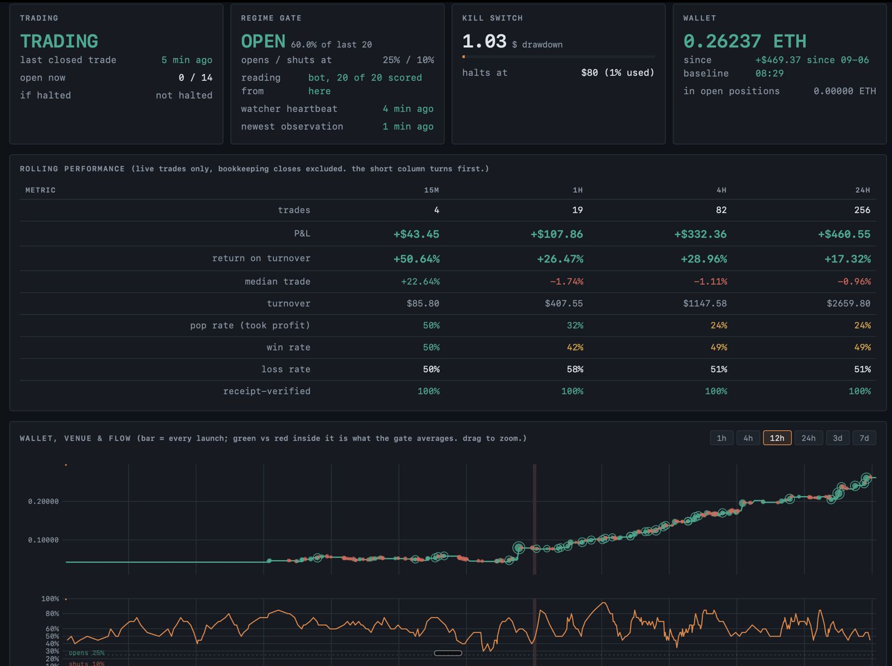
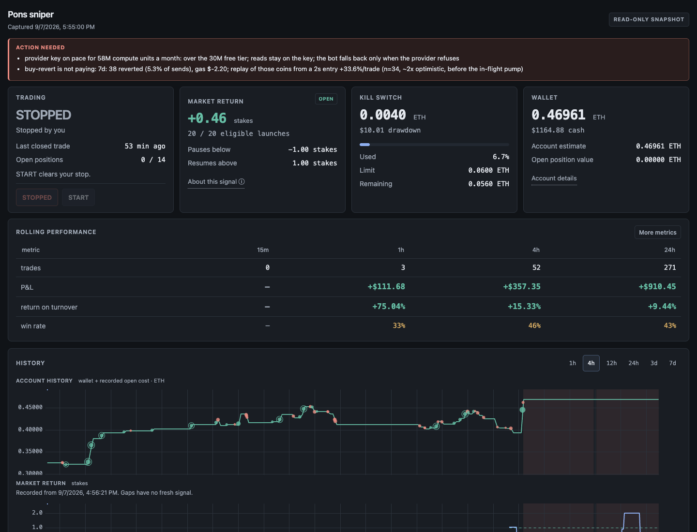
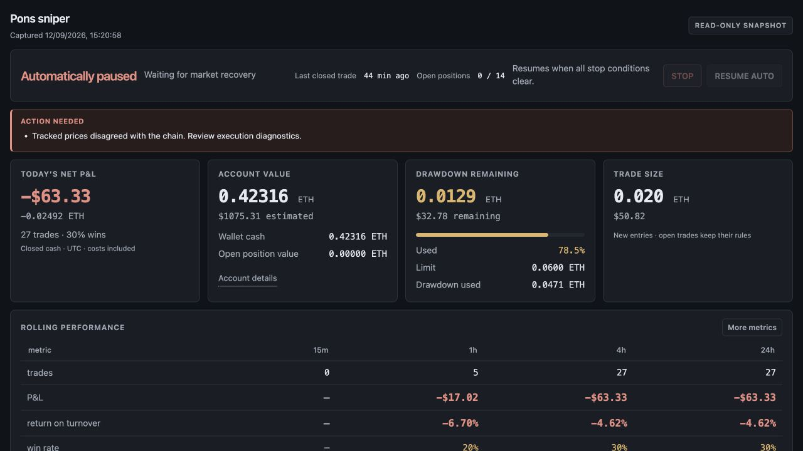
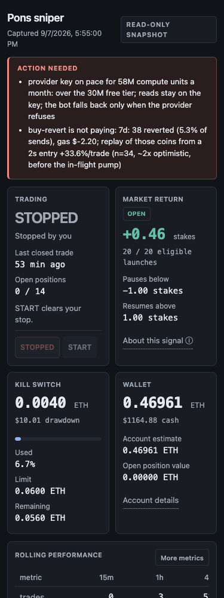
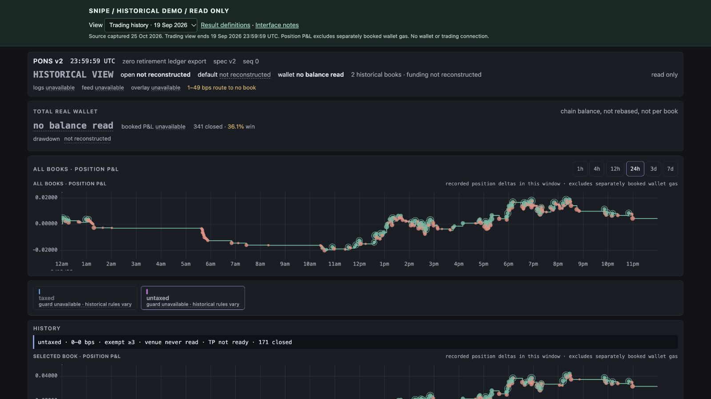
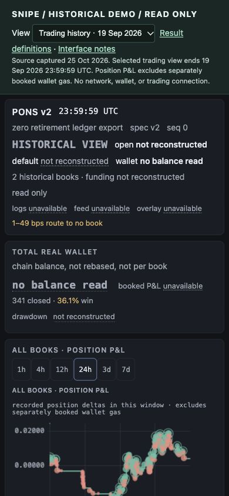

Snipe: the interface over time
Historical live captures, previews, and new reconstructions have different evidence status. Each image is labeled.
Open the read-only V2 demo · Interface notes

V1 early live capture
Exact capture time unknown. +$469.37 since baseline; +$460.55 over 256 trades in its displayed 24-hour window. Historical screen values, not a fresh audit.

V1 compact preview
Historical preview from the September dashboard refinement. The 24-hour column displays +$910.45. Different window from the early capture.

V1 policy preview
September 12 historical preview. Separates cash, account value, drawdown, and policy. This is not a new live capture.

V1 phone preview
Historical responsive-layout preview. Original pixels retained.

V2 historical demo, desktop
New reconstruction from sanitized records. Default trading view ends 19 September 2026. Observer history is unavailable.

V2 historical demo, phone
New reconstruction verified at 390 CSS pixels. Position P&L excludes separately booked wallet gas.
The remembered $1,700 profit screenshot was not found in the inspected project images. No image or claim was fabricated.